生産計画 PP（Production Planning）
生産計画 · BOM · 作業区 · 工順 · 原価見積 · 製造指図
1. 本モジュールのガイド
PP のメインラインは「マスタデータ → 計画 → 実行 → 原価」です：生産計画パラメータファイル、生産スケジューラ、製造指図パラメータ（スケジューリング / 指図タイプ / 確認）→ 部品表（BOM）（CS01、使用箇所一覧 CS15）→ 作業区（責任者、制御コード、能力 CR11、作業時間タイプの作業区 CR01）→ 工順（CA01）と工程分割（CA02）→ 完成品の生産計画ビュー → 原価計算の基礎（原価構成構造、見積バリアント、日付制御、数量構造制御、原価計算バリアント PC01）→ 製品原価見積（CK11N）→ 価格のマーク / 価格のリリース（CK24）→ 実績原価計算の評価バリアントと仕掛品結果分析バージョン → 所要量チェック（チェックグループ、チェック範囲、チェックルール PP01/PP02）→ 計画戦略グループ（MM02）と独立所要量（MD61）→ MRP 実行（MD02）、MRP 一覧 MD05、在庫所要量一覧 MD04 → 計画手配から製造指図へ → 購買依頼から購買発注へ → 入庫と請求書 → 製造指図の指図発行（CO02）/ 出庫 / 指図確認（CO11N）/ 入庫（MIGO）→ 原価照会（CO03）/ 技術的完了 / 差異決済（KO88）/ 原価レポート → 在庫一覧と在庫転送。
教材のシナリオは、「鋳鋼ポンプ 170-230」1 台について、BOM、工順、標準原価見積から製造指図の完了、決済、原価分析までを一通り行うものです。
- 3 大マスタデータ：BOM（
CS01）、作業区（CR01/CR11）、工順（CA01） - 標準原価見積と価格更新：
CK11Nで見積 →CK24でマーク → リリース - 計画戦略グループと独立所要量（
MD61）→ MRP（MD02）→ 計画手配から製造指図への変換 - 製造指図の実行チェーン：指図発行
CO02→ 出庫 → 確認CO11N→ 入庫MIGO→ 決済KO88
ドキュメントに出てくる T-code：CS01 CS15 CR11 CR01 KP26 CA01 CA02 PC01 CK11N CK24 MM03 PP01 PP02 MM02 MD61 MD05 MD04 MD02 COOIS MIGO MIRO MRBR CO02 CO11N CO03 KO88（詳細は T-code / IMG パス早見表 を参照）
2. タスク目次（51 件）
そのうち 51 件のタスクで、原教材ドキュメントの IMG 設定メニューパスが示されています；IMG 設定 のマークが付いているのはカスタマイジング（設定）タスク、業務処理 と付いているのは日常業務の操作タスクです。表示がないタスクは原文でも明示されておらず、タスク名からご自身で判断してください（一般に「～の定義／～パラメータのメンテナンス」＝ IMG 設定、「伝票・指図・請求書の登録／入力／照会」＝業務処理）。
3. 手順（タスクごと）
生産計画パラメータファイルを定義
2 画面 / 2 ステップ原語（中国語）
生产 → 商店底价控制 → 主数据 → 定义生产计划参数文件-
生産計画パラメータファイルは、品目（品目マスタの作業計画画面）または生産計画担当者に割り当てることができます
（IMG 設定）。そのうち品目マスタに割り当てられた生産計画パラメータファイルは、より高い優先順位を持ちます。製造指図の登録時に、生産計画パラメータが製造指図またはプロセス指図にコピーされます原文
生产计划 参数文件可以分配给物料（物料主数据中的工作排程屏幕）或者生产计划员
（后台配置）。其中分配给物料主数据的生产计划参数文件具有更高的优先级。在创建生产订单时生产计划参数将复制生产订单或流程订单
画面 770image777.png · 347×468 教材ノートクリックして進む -
前の画面に続けて操作します（画面 771）
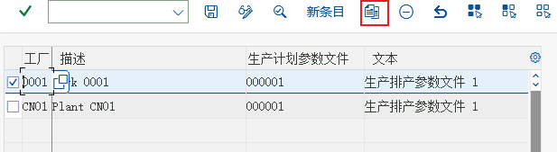
画面 771image778.png · 617×169 原理の説明解説：コピーする方法を採用し、プラント 1000、生産計画パラメータファイル 000001 をコピーします。
生産スケジューラを定義
4 画面 / 1 ステップ原語（中国語）
生产 → 商店底价控制 → 主数据 → 定义生产调度员-
品目マスタで生産スケジューラを品目に割り当てることで、生産作業管理において特定の品目に対する責任の所在を定義できます
生産－ショップフロアコントロール－マスタデータ－生産スケジューラの定義原文
通过在物料主数据中将生产调度员分配给物料，我们可以定义在生产作业控制中对某种物料的责任归属
生产－商店底价控制－主数据－定义生产调度员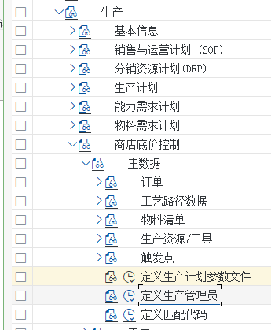
画面 772image785.png · 345×419 
画面 773image786.png · 678×353 画面 772image785.png · 345×419 画面 773image786.png · 678×353 教材ノート「新規エントリ」をクリックして進む教材ノートP999 | 999| 生産スケジューラ頤寧 | 000001
生産スケジューリングに関連する製造指図パラメータをメンテナンスします
3 画面 / 3 ステップ原語（中国語）
生产 → 商店底价控制 → 工序 → 计划 → 为生产订单定义计划参数-
生産－ショップフロアコントロール－工程－計画－製造指図の計画パラメータの定義
原文
生产－商店底价控制－工序－计划－为生产订单定义计划参数
画面 776image787.png · 440×380 -
ここでメンテナンスするパラメータは、製造指図のスケジューリングの各種操作と計算に影響します
原文
维护的这些参数将影响生产订单排程的各种操作和计算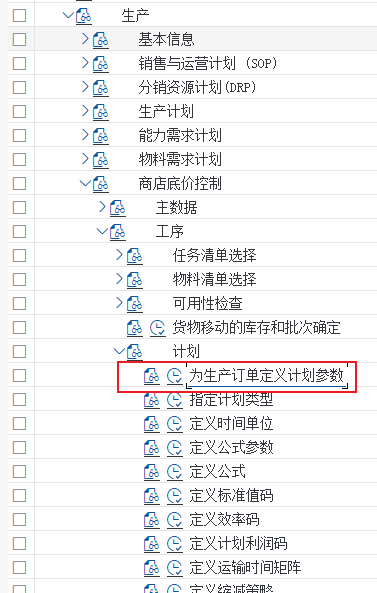
画面 777image788.png · 377×593 -
「新規エントリ」をクリック
原文
点击新条目
画面 778image789.png · 600×892
指図タイプに関連する製造指図パラメータをメンテナンスします
4 画面 / 3 ステップ原語（中国語）
生产 → 商店底价控制 → 主数据 → 订单 → 定义订单类型相关参数-
ここでメンテナンスするパラメータは、製造指図のスケジューリングの各種操作と計算に影響します
原文
维护的这些参数将影响生产订单排程的各种操作和计算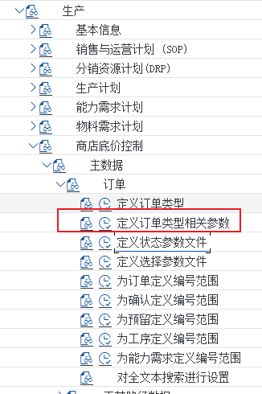
画面 779image790.png · 326×490 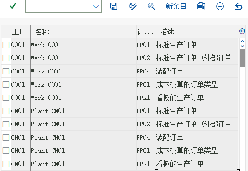
画面 780image791.png · 505×349 -
「新規エントリ」をクリック
原文
点击新条目
画面 781image792.png · 590×765 -
原教材では結果分析コードは FERT
原文
原书中结果分析码为FERT
画面 782image793.png · 618×448
確認に関連する製造指図パラメータをメンテナンスします
3 画面 / 3 ステップ原語（中国語）
生产 → 商店底价控制 → 工序 → 确认 → 定义确认参数-
確認はショップフロアコントロールにおける作業の 1 つで、指図全体に対して行う場合も、工程に対して行う場合もあります。責任者が指図の産出量や時間などの情報を承認または入力し、システムがチェックやバックフラッシュなどを実行するプロセスです。
原文
确认是生产订单管理中的一项工作，它既可以是针对整个订单的，也可以是针对工序的，它是由负责人员认可或填写订单的产出、时间等信息，并由系统执行检查、倒冲等操作的过程。
画面 783image794.png · 417×577 -
前の画面に続けて操作します（画面 784）
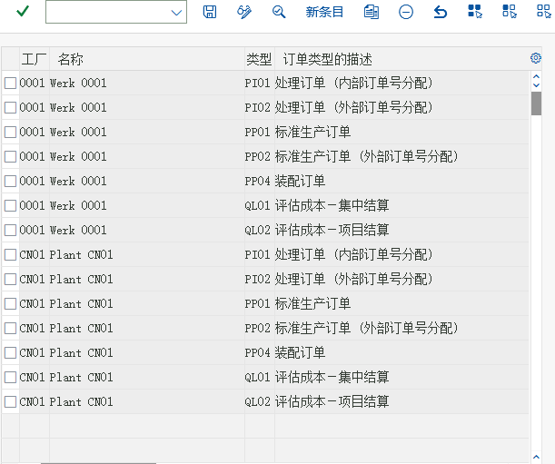
画面 784image795.png · 611×511 -
「新規エントリ」をクリック
原文
点击新条目
画面 785image796.png · 547×686
部品表（BOM）を新規作成
CS013 画面 / 3 ステップR999-100カバー1PCR999-200フライホイール1PCR999-300管軸1PCR999-400支持フレーム1PCR999-500金属片0.60M2R999-100カバー1PCR999-200フライホイール1PCR999-300管軸1PCR999-400支持フレーム1PCR999-500金属片0.60M2F999-100 P999 1
原語（中国語）
R999-100罩壳1PCR999-200飞轮1PCR999-300管轴1PCR999-400支撑架1PCR999-500金属片0.60M2R999-100罩壳1PCR999-200飞轮1PCR999-300管轴1PCR999-400支撑架1PCR999-500金属片0.60M2F999-100 P999 1
后勤 → 生产 → 主数据 → 物料清单 → 物料 BOM → CS01 新建-
ロジスティクス－生産－マスタデータ－部品表（BOM）－品目 BOM — CS01 新規登録
原文
后勤－生产－主数据－物料清单－物料 BOM — CS01 新建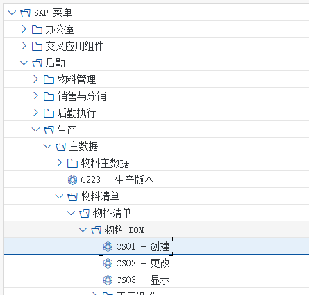
画面 786image797.png · 445×424 -
前の画面に続けて操作します（画面 787）

画面 787image798.png · 496×342 -
明細カテゴリはすべて L（在庫項目）を使用
上記のデータを入力し、「保存」をクリックすれば完了です原文
项目类别都用L,库存项目
录入 上述数据，点击保存即可
画面 788image799.jpeg · 1215×452
品目の使用先一覧を照会
業務処理（トランザクション）CS154 画面 / 4 ステップ原語（中国語）
后勤 → 生产 → 主数据 → 物料清单 → 报告 → 调用清单 → 所用处清单 CS15-物料-
ロジスティクス－生産－マスタデータ－部品表（BOM）－レポート－一覧の呼び出し—使用箇所一覧 CS15-品目
原文
后勤－生产－主数据－物料清单－报告－调用清单—所用处清单 CS15-物料
画面 789image800.png · 445×481 -
前の画面に続けて操作します（画面 790）

画面 790image801.png · 482×450 -
「次画面」をクリックすると、下図のとおり
原文
点击下一屏，如下图所示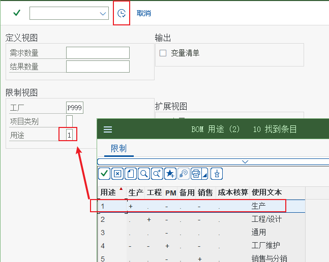
画面 791image802.png · 647×516 -
F8 をクリックして実行すると、次のとおり
原文
点击 F8 运行，如下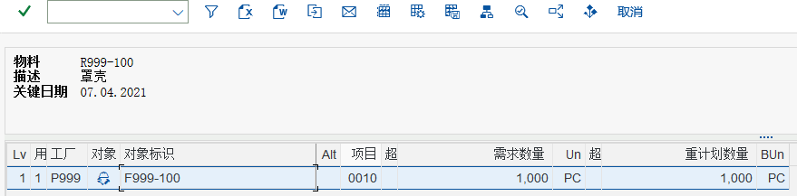
画面 792image803.png · 879×217 教材ノートこのレポートは、カバーが品目 F999-100 の生産に使用されていることを示しています
作業区の責任者を定義
3 画面 / 3 ステップ原語（中国語）
生产 → 基本数据 → 工作中心 → 通用数据 → 确定负责人-
解説： 頤寧公司には「材料準備」「切断」といった作業区があります。完成品「鋳鋼ポンプ 170-230」を生産するには、これらの作業区で一定の順序に従って各工程を実行する必要があり、SAP ではこれを「工順」と呼びます。これらは後でメンテナンスします。本ステップでは、各作業区に対して IMG 設定で責任者を定義する必要があり、これらの責任者は作業区のマスタデータに配賦されます。簡略化のため、作業区の責任者は 1 人だけ定義しています。
生産－基本データ－作業区－一般データ－責任者の決定原文
解释：颐宁公司有 “ 物料准备”，“ 切割” 这样一些工作中心，生产产成品 “ 铸钢泵 170-230 ” 需要以一定的次序在这些工作中心执行各道工序，SAP 称之为“工艺路线”。这些我们在之后维护。本步骤中，我们需要为各工作中心在后台定义一些负责人，这些负责人都会分配到工作中心的主数据中。为简化，我们只定义了一个工作中心负责人。
生产－基本数据－工作中心－通用数据－确定负责人
画面 793image804.png · 339×451 -
前の画面に続けて操作します（画面 794）

画面 794image805.png · 512×328 教材ノート「新規エントリ」をクリックし、 -
P999 999 頤寧作業区 責任者
原文
P999 999 颐宁工作中心负责人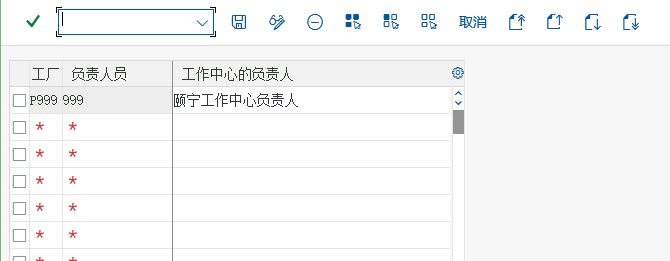
画面 795image806.png · 670×261
作業区の制御コードを定義
3 画面 / 3 ステップ「新規エントリ」をクリック
原語（中国語）
点击新条目
生产 → 基本数据 → 工作中心 → 工艺路径数据 → 定义控制码-
解説： この制御コードは、工順の特定の工程で実行する必要がある業務機能、および SAP がその工程をどのように処理するかを制御します。たとえば、この工程でスケジューリングが必要か、能力所要量を生成する必要があるか、作業票を印刷する必要があるか、手戻り工程が必要か、原価計算が必要か、確認が必要かまたその方法はどうか、内製処理か外注処理かなどを制御します。
生産－基本データ－作業区－工順データ－制御コードの定義原文
解释：这个控制码控制着工艺路线中的某个工序需要执行的业务功能，以及 SAP 如何处理这个工序。比如这个工序是否需要排程、是否需要产生产能需求、是否需要打印公票、是否需要返工工序、是否需要计算成本、是否和如何进行确认、是内部还是外部处理。
生产－基本数据－工作中心－工艺路径数据－定义控制码
画面 796image807.png · 376×522 -
前の画面に続けて操作します（画面 797）

画面 797image808.png · 455×446 -
制御コード ZKM1 頤寧作業区の制御コード（スケジューリング）
原文
控制码 ZKM1 颐宁工作中心控制码调度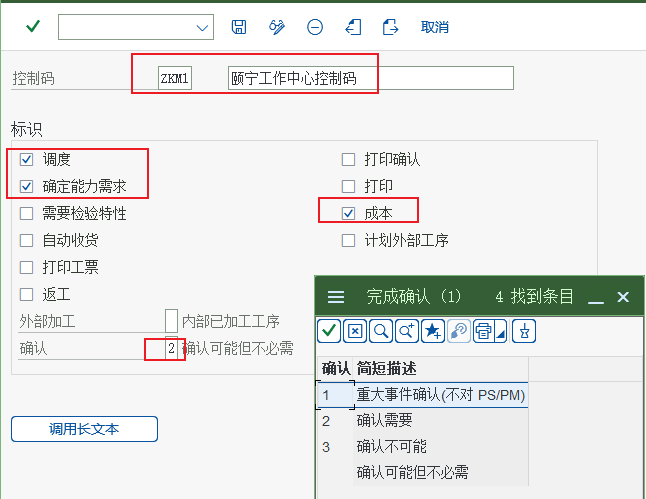
画面 798image809.png · 646×499 教材ノート能力所要量の確定 原価教材ノート確認 2 確認は可能ですが必須ではありません
人工工数の能力を新規作成
CR115 画面 / 2 ステップ原語（中国語）
后勤 → 生产 → 主数据 → 工作中心 → 能力 → CR11-创建-
解説： 頤寧公司の各人工作業区のリソースは共有されており、それらの生産能力は割り当てて使用できます。そのため、このステップでは工場全体の人工工数能力を一括して計算し、後続のステップで人工工数カテゴリの作業区を新規登録する際に、汎用の人工工数能力をそれらに配賦します。もちろん、能力を作業区のレベルで定義することもできます。
ロジスティクス－生産－マスタデータ－作業区－能力－CR11-登録原文
解释：颐宁公司的各人工工作中心的资源是共享的，它们的生产能力是可以调配使用的，所以我们在这个步骤将统一核算整个工厂的人工工时能力，在后面的步骤中，当新建人工工时类别的工作中心时，我们将通用人工工时能力分配给它们。当然能力也可以定义在工作中心这一层。
后勤－生产－主数据－工作中心－能力－CR11-创建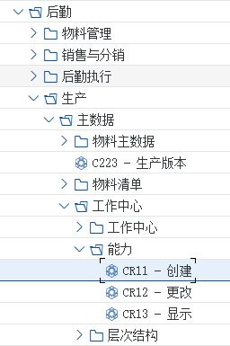
画面 799image812.png · 256×385 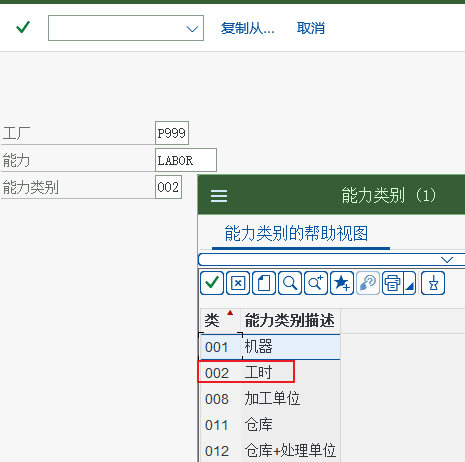
画面 800image813.png · 465×462 画面 799image812.png · 256×385 画面 800image813.png · 465×462 -
Labor は定義のみで、002 が工数です
原文
Labor 只是定义，002 是工时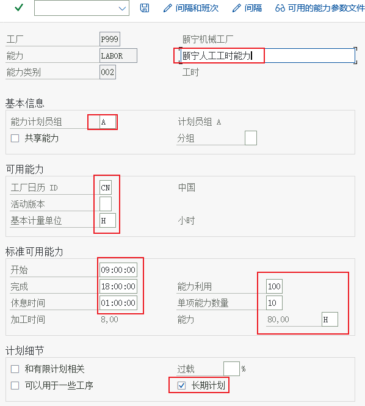
画面 803image814.png · 598×665 教材ノート単一能力数量は、分割して使用できる単一能力が 10 個あることを指します。たとえば、頤寧公司が常に班単位で管理している場合は、ここは班の数になります。個々の作業者単位で割り当てる場合は、ここは作業者の数になります。ここは、後述の工順の定義と定義上一致させておく必要があります。教材ノート能力利用 100 は、100% 有効に活用できることを表します。教材ノート有限計画に関係します。有限スケジューリングを行う際に、システムはこの能力の使用可能量と負荷量を考慮する必要があります。ここにチェックを入れた能力だけが、能力可用性チェックで考慮されます。
機械工数の能力を新規作成
CR112 画面 / 2 ステップ原語（中国語）
解释：和人工工时能力类似，颐宁公司的各机器工作中心的资源也是共享的。后勤 → 生产 → 主数据 → 工作中心 → 能力 → CR11-创建-
解説： 人工工数の能力と同様に、頤寧公司の各機械作業区のリソースも共有されています。ロジスティクス－生産－マスタデータ－作業区－能力－CR11-登録
原文
解释：和人工工时能力类似，颐宁公司的各机器工作中心的资源也是共享的。后勤－生产－主数据－工作中心－能力－CR11-创建
画面 804image815.png · 348×209 -
前の画面に続けて操作します（画面 805）

画面 805image816.png · 593×686
人工工数タイプの作業区を新規作成
CR01KP2622 画面 / 15 ステップ原語（中国語）
后勤 → 生产 → 主数据 → 工作中心 → 工作中心 → CR01-创建-
ロジスティクス－生産－マスタデータ－作業区－作業区－CR01-登録
原文
后勤－生产－主数据－工作中心－工作中心－CR01-创建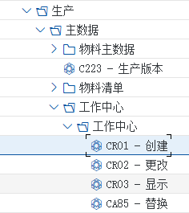
画面 806image817.png · 236×265 
画面 807image818.png · 494×452 -
Enter 後は次のとおり
原文
回车后如下所示
画面 808image819.png · 584×685 
画面 809image820.png · 599×511 -
工数を「必須メンテナンス」に選択
原文
将工时选择为必须维护
画面 810image821.png · 570×798 教材ノート「デフォルト値」をクリック -
前の画面に続けて操作します（画面 811）

画面 811image822.png · 628×693 -
ZKM1 は以前に定義したデフォルト制御コードです
MIN は分を指す。「スケジューリング」をクリック原文
ZKM1 是我们在之前定义的缺省控制码
MIN 是指分钟点击调度
画面 812image823.png · 621×683 -
「原価計算」をクリック
原文
点击成本核算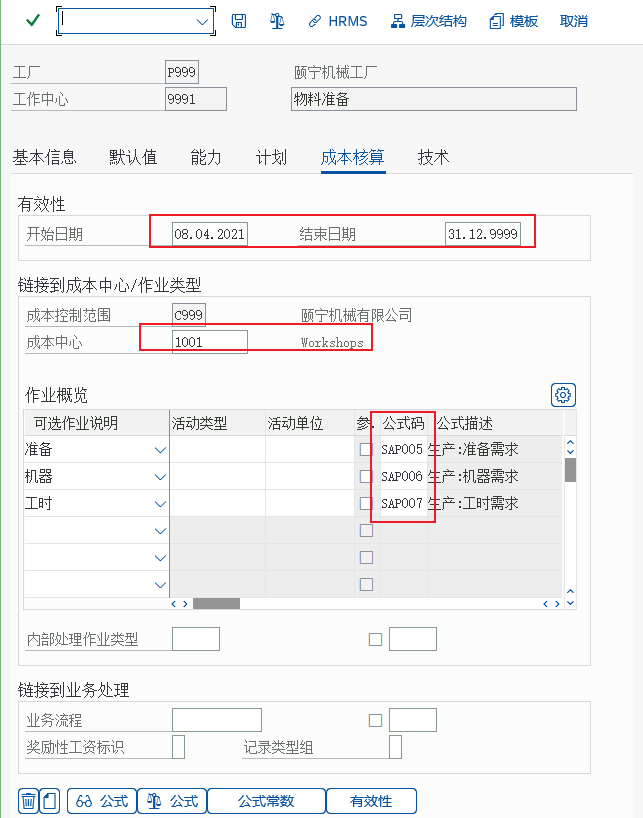
画面 813image824.png · 643×818 -
ここでは、CO モジュールで KP26 が完了していないため、作業タイプの分割の定義に進むことができません
原文
此处活动类型由于在 CO 模块未完成 KP26，故无法继续接下来定义切割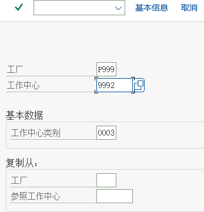
画面 814image825.png · 347×361 -

画面 815image826.png · 600×728 -
前の画面に続けて操作します（画面 816）
-

画面 819image830.png · 357×377 
画面 820image831.png · 626×639 -
9995 組立
原文
9995 装配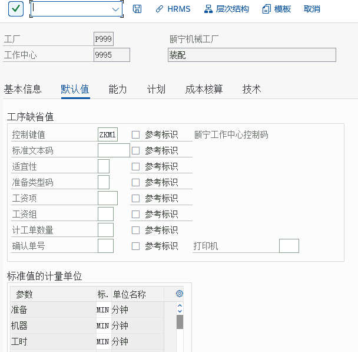
画面 821image832.png · 608×597 -
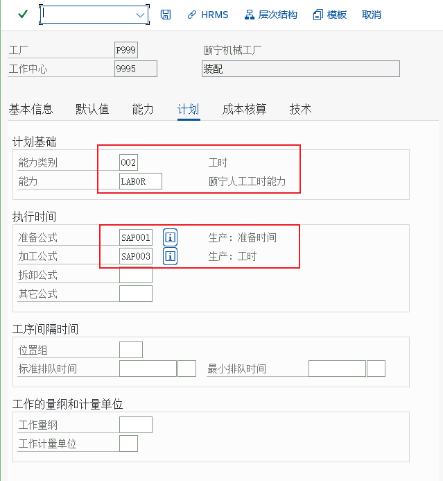
画面 822image833.png · 639×693 -
前の画面に続けて操作します（画面 823）

画面 823image834.png · 591×611 -
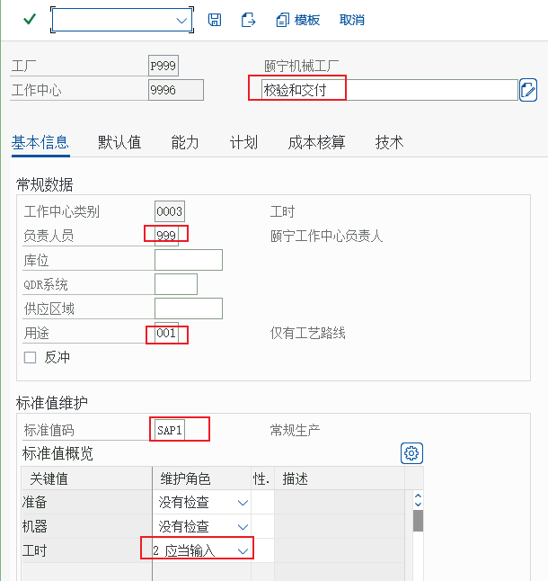
画面 824image835.png · 610×646 
画面 825image836.png · 571×605 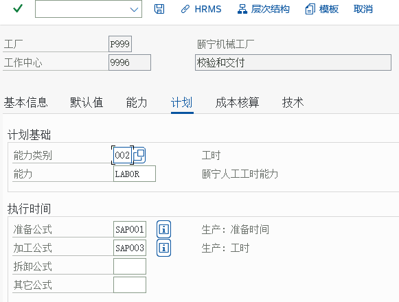
画面 826image837.png · 581×440 -
9996 検査と引渡
原文
9996 校验和交付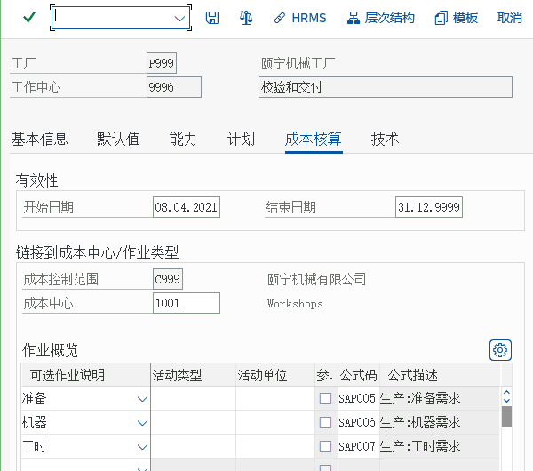
画面 827image838.png · 600×530


機械工数タイプの作業区を新規作成
CR0110 画面 / 5 ステップ原語（中国語）
颐宁公司有“油漆”，“ 预装配”这样两个以机器工时为主的工作中心，本步骤中逐个创建后勤 → 生产 → 主数据 → 工作中心 → 工作中心 → CR01-创建-
前の画面に続けて操作します（画面 828）

画面 828image839.png · 466×476 -

画面 829image840.png · 580×608 
画面 830image841.png · 602×666 
画面 831image842.png · 616×628 -
前の画面に続けて操作します（画面 832）

画面 832image843.png · 589×614 
画面 833image844.png · 361×381 教材ノート予備組立作業区 9994 を登録 -
前の画面に続けて操作します（画面 837）

画面 837image848.png · 621×628


工順を新規作成
CA0120 画面 / 18 ステップ原語（中国語）
后勤 → 生产 → 主数据 → 工艺路线 → 工艺路线 → 标准工艺路线 → CA01-创建-
解説： 頤寧公司には「品目準備」「切断」「組立」「検査と受渡」という、人工工数を主とする 4 つの作業区があります。
原文
解释：颐宁公司有 “ 物料准备”，“ 切割”，“ 装配”，“ 校验和交付” 这样四个以人工工时为主的工作中心。
画面 838image849.png · 270×367 
画面 839image850.png · 630×453 -
前の画面に続けて操作します（画面 840）

画面 840image851.png · 909×830 教材ノート00109991P999ZKM1カバーと金属片の準備00209992P999ZKM1金属片の切断00309994P999ZKM1予備組立00409995P999ZKM1組立00509996P999ZKM1検査と引渡00109991P999ZKM1カバーと金属片の準備00209992P999ZKM1金属片の切断00309994P999ZKM1予備組立00409995P999ZKM1組立00509996P999ZKM1検査と引渡ステータス 4 は各種業務を実行できることを示します。工程をクリック -
グループカウンタ：SAP では、工順はグループコードとグループカウンタの両方で採番されます。グループカウンタにより、1 つの製品に複数の工順を定義できます。たとえばロットサイズが異なる場合に別々の工順を使えます。ここでは工順を 1 つだけメンテナンスします。
原文
组计数器：SAP 中工艺路线是通过组编码和组计数器两者来编号的。组计数器可以定义一个产品的多条工艺路线。比如当不同的批量大小时可以用不同的工艺路线。我们这里只维护一条工艺路线。
画面 841image852.png · 1183×466 -
Enter を押すか、工程 0010 をダブルクリックすると
原文
点击回车后，或者双击 0010 工序后
画面 842image853.png · 644×603 教材ノート前の手順で LAB を作業区に関連付けていないため、ここでメッセージが表示されます -
前の画面に続けて操作します（画面 843）
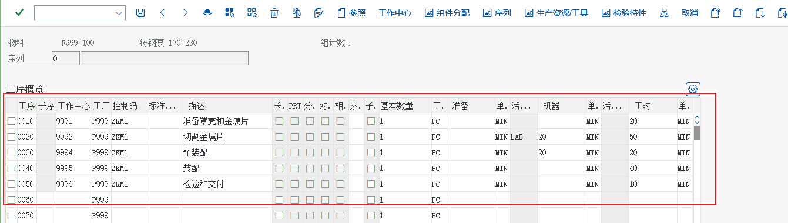
画面 843image854.png · 1341×382 -
「順序」をクリック
原文
点击顺序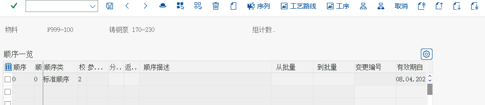
画面 844image855.png · 1043×227 -
前の画面に続けて操作します（画面 845）
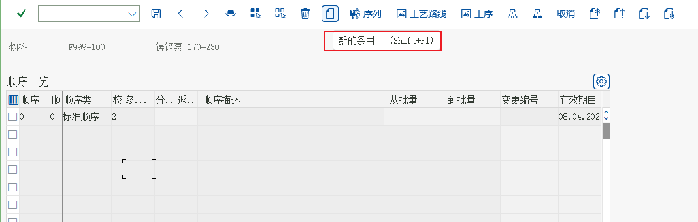
画面 845image856.png · 1068×341 -
解説： ここで工順に対して 1 つの「標準順序」、すなわち先ほどの各工程を定義したことがわかります。しかし「鋳鋼ポンプ 170-300」の生産では、「塗装カバー」の工程は上記の金属板の切断と並行しています。次にこの並行する順序を定義します。「新規」ボタンをクリックします。
原文
解释：我们看到现在我们为工艺路线定义了一条“标准顺序”，也就是刚才各道工序。但是在生产“铸钢泵 170-300”的过程中，“ 油漆罩壳”的工序是和上面的切割金属片并行的。下面我们来定义这个并行的顺序。点击新建按钮
画面 846image857.png · 277×302 -
前の画面に続けて操作します（画面 847）

画面 847image858.png · 711×318 -
Enter 後
原文
回车后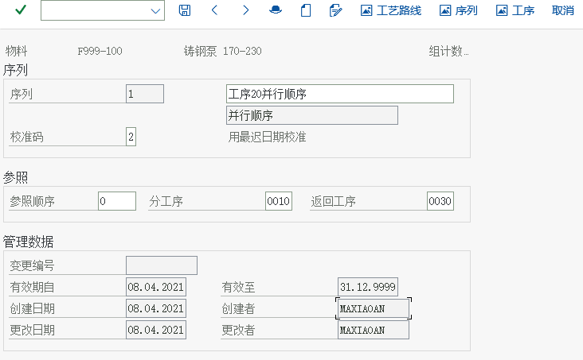
画面 848image859.png · 732×453 -
工程分割 10 とは、0010 工程の完了後にこの並行作業を開始することを指します
戻り工程とは、この並行工程を完了した後に 0030 工程へ戻ってシーケンスをクリックすることを指します原文
分工序 10 指完成 0010 工序后开始该并行作业
返回工序指完成该并行工序后，返回 0030 工序点击序列
画面 849image860.png · 1072×911 -
0010 9993 P999 ZKM1 塗装カバー
原文
0010 9993 P999 ZKM1 油漆罩壳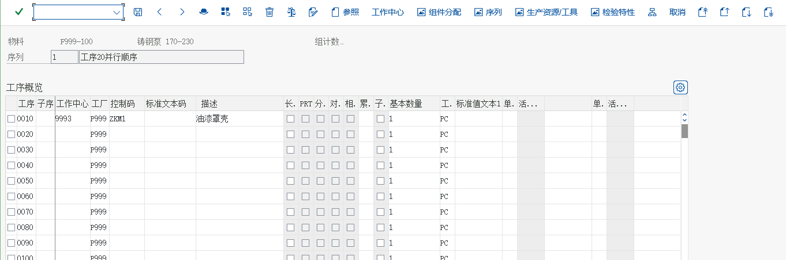
画面 850image861.png · 1362×452 -
新しい並行順序が登録されていることがわかります。次に、この並行順序を具体的に定義します。「順序 1」の行を選択し、「工程」をクリックします
明細行をダブルクリックすると工程 0010 になります。または Enter を押します原文
我们看到已经新建了个并行顺序，下面来具体定义该并行顺序选中“顺序 1”行，点击工序
双击行项目，工序为0010，或者回车
画面 851image862.png · 951×884 -
「構成品目の割当」をクリック
原文
点击组件分配
画面 852image863.jpeg · 1217×407 原理の説明解説：工程を定義したので、次に各種原材料をどの工程で投入するかを定義します。この画面は当該製品の… -
BOM 構成品目
原文
BOM 组件
画面 853image864.png · 943×610 -
解説： 投入する工程を直接入力することも、一覧から工程を選択することもできます。「工程活動一覧」をクリックします
原文
解释：我们可以直接填入投料的工序，也可以从清单中选择工序点击工序活动清单
画面 854image865.png · 508×356 -
画面から分かるように、工程 20 と工程 10 は並行しています。工程 10 を選択し、「確認」をクリックします
原文
从屏幕可以看出，工序 20 和工序 10 是平行的。选择工序 10，点击确认
画面 855image866.png · 880×610 原理の説明解説：引き続き品目の配賦を行います。最終結果は次のとおりで、最後に「保存」をクリックします -
前の画面に続けて操作します（画面 856）
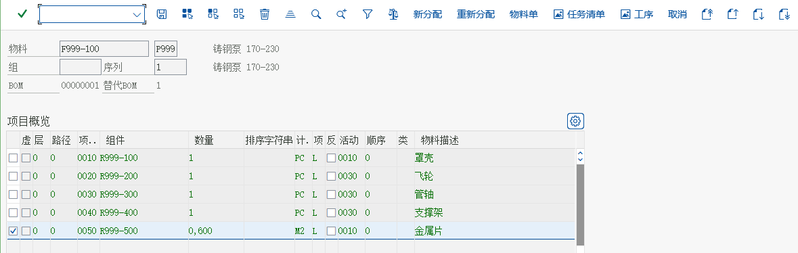
画面 856image867.png · 1179×374 
画面 857image868.png · 403×60
工程分割
CA026 画面 / 4 ステップ解説：頤寧公司の人工能力と機械能力は、いずれも 10 の能力単位で構成されています。完成品の工順で、製造指図を 1 つの能力単位で順に生産するのか、製造指図の数量を各能力単位に分割して生産するのかを決定する必要があります。この制御パラメータは各工程にあり、指図の日程計画の時間に影響します。本ステップでは、工順のすべての工程を能力単位で分割する必要があるように設定します。
原語（中国語）
解释：颐宁公司的人工类产能和机器产能都是由 10 组产能单位构成的。我们需要在产成品的工艺路线中决定，生产订单是在一个产能单位上顺序生产，还是要将生产订单的数量拆分到各产能单位上生产。这个控制参数是在各工序上的，它会影响订单排程的时间。本步骤中，我们将工艺路线中的所有工序都设定为需要按产能单位拆分
后勤 → 生产 → 主数据 → 工艺路线 → 工艺路线 → 标准工艺路线 → CA02-更改| 項目（日本語） | 画面の中国語 | 教材の設定値 |
|---|---|---|
| 「順序」をダブルクリック | 双击顺序 | 1 |
| 「工程」をダブルクリック | 双击工序 | 0010 |
-

画面 858image869.png · 617×643 -
ロジスティクス－生産－マスタデータ－工順－工順—標準工順－CA02-変更
「工程」をクリックすると次の画面へ進む原文
后勤－生产－主数据－工艺路线－工艺路线—标准工艺路线－CA02-更改
点击工序进入如下页面
画面 859image870.jpeg · 1376×408 -
「工程 0010」をダブルクリックして進みます
原文
双击“工序 0010 ”，进入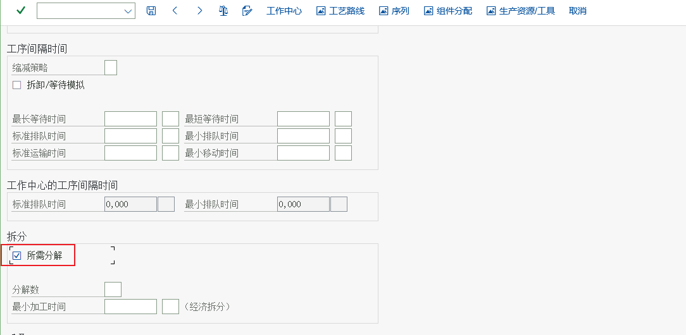
画面 860image871.png · 1084×530 教材ノート分割で必要な分解を選択して「保存」をクリックします。ただし、他の工程の順序も変更する必要があります -
前の画面に続けて操作します（画面 861）

画面 861image872.png · 1083×428 
画面 862image873.png · 1293×860 
画面 863image874.jpeg · 1214×797 教材ノート「所要分解」の前のチェックボックスにチェックを入れ、保存します
完成品の生産計画ビューを新規作成
4 画面 / 3 ステップ原語（中国語）
后勤 → 生产 → 主数据 → 物料主数据 → 物料 → 创建（特殊） → MMF1-成品-
ロジスティクス－生産－マスタデータ－品目マスタ－品目－登録（特殊）－MMF1-完成品
原文
后勤－生产－主数据－物料主数据－物料－创建（特殊）－MMF1-成品
画面 864image875.png · 476×285 -
解説： MM では、完成品（FERT）の生産計画ビューをメンテナンスしていません。
作業計画ビューを選択原文
解释：MM 中，我们没有维护产成品的生产计划视图。
选择工作计划视图
画面 865image876.png · 346×707 -
前の画面に続けて操作します（画面 866）

画面 866image877.png · 543×248 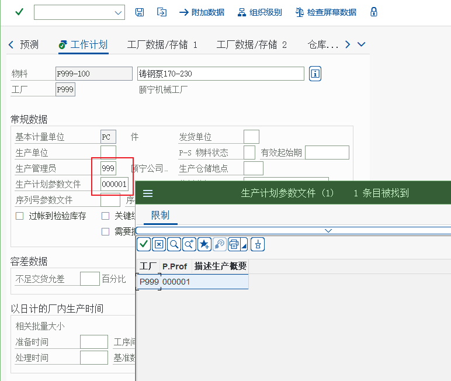
画面 867image878.png · 772×652
原価構成構造を定義
IMG設定（カスタマイズ）16 画面 / 14 ステップZ1 を選択し、左側の欄の「属性付き原価コンポーネント」をダブルクリックします。
解説：
原価シェアを管理します。変動費。変動費のみが製品原価見積に表示されます
Z1 を選択して有効を選択し、左側の「属性付き原価コンポーネント」をダブルクリックします
原語（中国語）
选中 Z1，双击左栏的“带有属性的成本组件”。
解释：
控制成本份额。可变成本。只有可变成本会在产品成本估算中显示
选中 Z1 选择有效，然后双击左栏“带有属性的成本组件”
控制 → 产品成本控制 → 产品成本计划 → 物料成本核算的基本设置 → 定义成本构成结构-
解説： 頤寧公司が生産する「鋳鋼ポンプ 170-230」の BOM と工順はすでにシステムにメンテナンスされています。次に、この完成品の標準原価を計算できます。製品原価は PP と CO の最も重要な統合点です。本ステップでは、IMG 設定で製品原価に関連する重要なパラメータ「原価構成構造」を設定する必要があります。原価構成では、頤寧公司の製品原価がどのように構成されるか、各原価構成と原価要素の関係がどのようになっているかを定義し、さらに原価構成構造をプラントに配賦します。
原文
解释：颐宁公司生产的“铸钢泵 170-230”的 BOM 和工艺路线已经在系统里维护，接下 来我们可以计算该产成品的标准成本了。产品成本是 PP 和 CO 最重要的集成。本步骤我们需要在后台配置和产品成本有关的一个重要参数：“ 成本构成结构”。在成本结构中我们定义颐宁公司的产品成本是如何构成的，各成本构成和成本要素的关系怎样的，并且将成本构成结构分配给工厂
画面 868image879.png · 372×513 -
前の画面に続けて操作します（画面 869）

画面 869image880.png · 810×606 -
解説： この画面の左側は「原価コンポーネント構造」パラメータの各階層をメンテナンスする領域です。現在は最上位にいるため、画面の右側にはシステムに既に存在する原価コンポーネント構造の一覧が表示されています。新しい原価コンポーネント構造を定義します。「新規エントリ」をクリックします。
原文
解释：该屏幕的左侧是维护“成本构成结构”参数的各层次。现在我们在最上层，因此屏幕的右侧是目前系统中已经有的成本构成结构的清单。我们要定义一个新的成本构成结构。点击新条目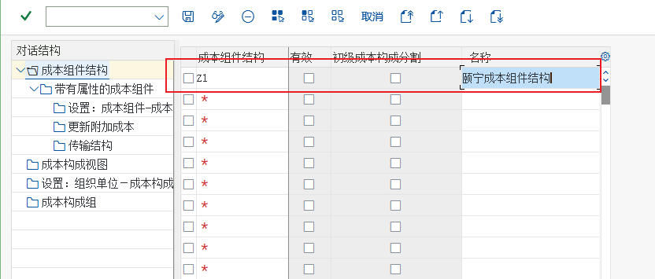
画面 870image881.png · 832×355 -
ポップアップ内で「新規エントリ」をクリック
原文
在弹出框中，点击新条目
画面 871image882.png · 967×779 -
原価コンポーネントの集約。この原価コンポーネントの原価が、より上位の製品の同じ原価コンポーネントの原価に集約されることを指します。左欄の「設定-原価コンポーネント-原価要素範囲」をダブルクリック
「新規エントリ」をクリック原文
汇总成本组件。指该成本组件的成本将被汇总到更高一层的产品的该成本组件成本中双击左栏“设置-成本组件-成本要素区间”
点击新条目
画面 872image883.png · 1096×216 -
左側の欄の「設定-組織-原価コンポーネントレイアウト」をダブルクリックします
原文
双击左栏“设置-组织-成本构成格式”
画面 873image884.png · 1472×396 教材ノート++++ ++++ ++++ 01.01.2021 Z1 頤寧原価コンポーネント構造 -
解説： ここでは、新しく登録した原価構成構造を、該当する会社コード、プラント、原価計算バリアントおよび一定の有効期間に割り当てます
「新規エントリ」を押す原文
解释：我们在这里将我们新建的成本构成结构分配给相关的公司代码，工厂，成本核算变式和一定的有效期
按新条目
画面 874image885.png · 1447×331 -
原価コンポーネント構造の定義の最上位に戻り、この原価コンポーネント構造を有効化します。つまり「有効」にチェックを入れます
原文
我们回到成本构成结构定义的最上层，然后激活该成本构成结构，即勾选有效
画面 875image886.png · 874×321 -

画面 876image887.png · 1006×725 -
解説： 先ほどはこの原価構成構造の中の 1 つの原価コンポーネントだけを定義しました。続けて、機械工数、人工工数、準備工数の原価をそれぞれ 3 つの原価コンポーネントとして定義します。
「新規エントリ」をクリック原文
解释，我们刚才只定义了该成本构成结构中的一个成本组件，现在我们接着将机器工时，人工工时和准备工时成本分别定义成三个成本组件
点击新条目
画面 877image888.png · 1143×229 -
左側の「原価コンポーネント構造」をダブルクリックし、同じ方法で 030、040 を設定します。
原文
双击左栏“成本组件结构”用同样的办法吧 030，040 设置好。
画面 878image889.png · 1002×723 -
前の画面に続けて操作します（画面 879）
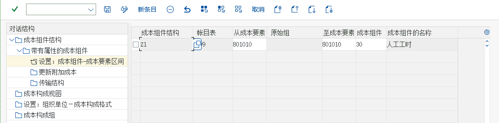
画面 879image890.png · 1111×275 
画面 880image891.png · 1036×723 -
完了後、「戻る」をクリックし、
原文
完成后，点击返回，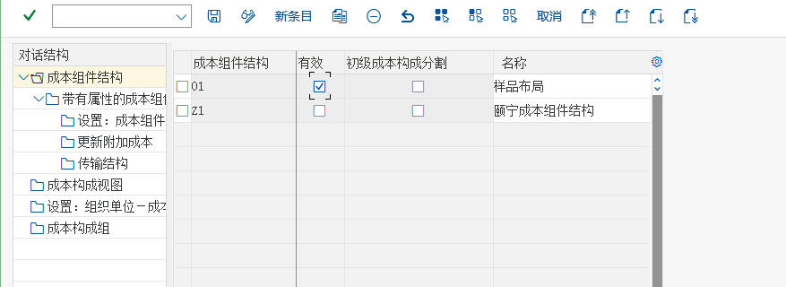
画面 881image892.png · 877×320 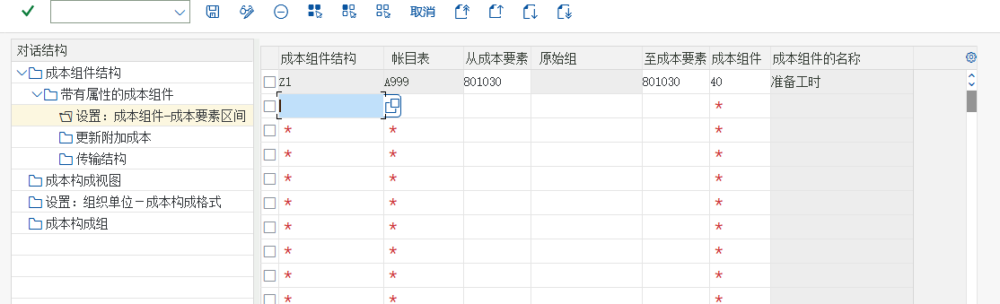
画面 882image893.png · 1114×339 -
左側の欄の「原価コンポーネント構造」をダブルクリックします
Z1 以外の原価コンポーネントの有効チェックをすべて外して保存します。原文
双击左栏的“成本组件结构”
将除 Z1 外的成本结构组件的有效勾都去掉，保存。
画面 883image894.png · 904×379
評価バリアントを定義
IMG設定（カスタマイズ）7 画面 / 7 ステップ原語（中国語）
控制 → 产品成本控制 → 产品成本计划 → 带数量结构的成本估算 → 成本核算变式：组件 → 定义评估变式-
管理会計－製品原価管理－製品原価計画－数量構成付き原価見積－原価計算バリアント：コンポーネント－評価バリアントの定義
原文
控制－产品成本控制－产品成本计划－带数量结构的成本估算－成本核算变式：组件－定义评估变式
画面 884image895.png · 433×822 -
解説： 製品原価計算で最も重要なパラメータは「原価計算バリアント」で、これは 21 で学びます。原価計算バリアントは、原価計算のさまざまな側面を定義するより小さなパラメータから構成されており、そのうち本ステップは、品目、作業、外注、外部加工、間接費などの評価基準の定義に関するもので、SAP ではこれを評価バリアントと呼びます。
原文
解释：在产品成本核算中，最重要的参数是“成本核算变式”，我们将在 21 学到。成本核算变式又是由定义成本核算不同方面的较小的参数构成的，其中本步骤是与定义物料、作业、外包、外部加工、间接费用等的估价标准相关的，SAP 称之为评估变式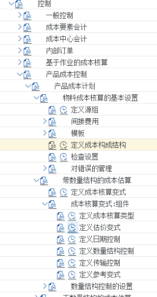
画面 885image896.png · 320×605 -
解説： システムにすでにある評価バリアントを利用します
「評価バリアント：001」をダブルクリックして進みます原文
解释：我们利用系统已经有的估价变式
双击“评估变式：001 ”，进入
画面 886image897.png · 686×450 教材ノート評価バリアント。「戻る」をクリックします。007 をダブルクリックし、次のように設定します -
評価バリアント 001 はシステムにあらかじめ用意された品目計画の評価バリアントです。今後の操作では 001 を品目として使用します
原文
估价变式 001 是系统预设的物料计划估价变式。我们将在以后的操作中使用 001 作为物料
画面 887image898.png · 635×465 -
007 は指図の実績原価の計算で使用されます。ここでその設定も確認してみます。「評価バリアント/プラント」をクリックします
原文
007 将被用于订单实际成本的计算中。我们也来查看一下它的配置。点击评估变式/工厂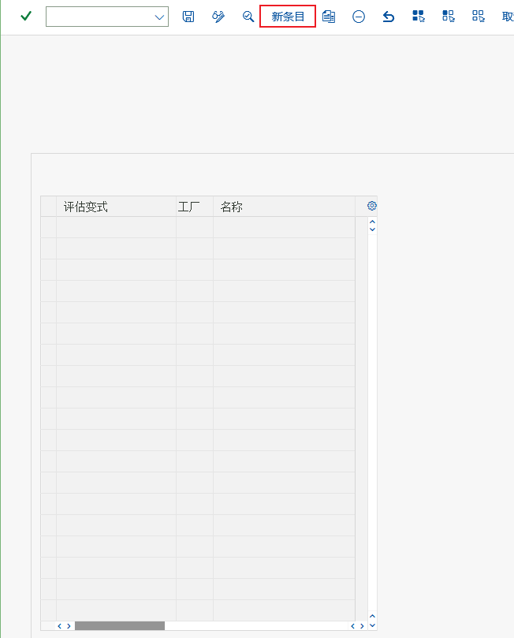
画面 888image899.png · 652×809 教材ノート「新規エントリ」をクリック -
前の画面に続けて操作します（画面 889）
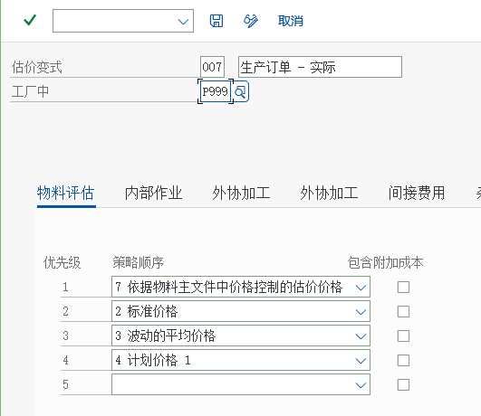
画面 889image900.png · 531×460 -
「戻る」を 2 回クリックし、その後「保存」をクリックします
原文
点击两次返回，然后点击保存
画面 890image901.png · 612×351
日付制御を定義
3 画面 / 3 ステップ原語（中国語）
控制 → 产品成本控制 → 产品成本计划 → 带数量结构的成本估算 → 成本核算变式：组件 → 定义日期控制-
解説： 日付管理も原価計算バリアントの中のパラメータの一つです。原価計算において日付に関連する内容を管理します。IMG 設定
原文
解释：日期控制也是成本核算变式中的一个参数。它控制成本核算中和日期相关的内容。后台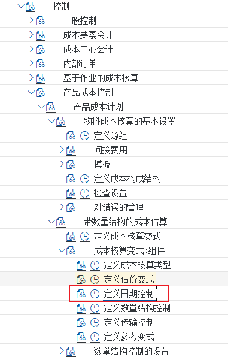
画面 891image902.png · 381×596 -
前の画面に続けて操作します（画面 892）
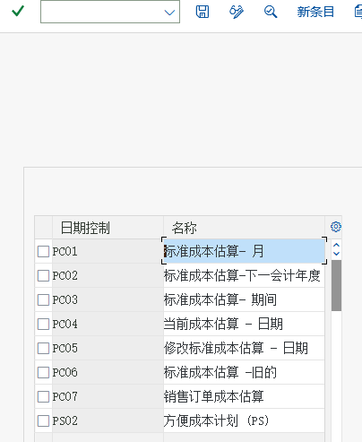
画面 892image903.png · 404×493 -
「新規エントリ」をクリック
原文
点击新条目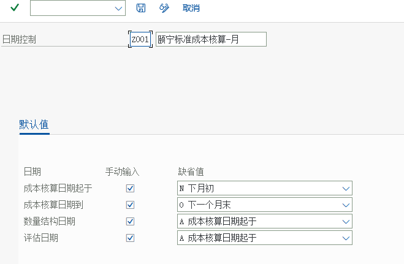
画面 893image904.png · 659×431
数量構成の制御を定義
IMG設定（カスタマイズ）PC018 画面 / 4 ステップ原語（中国語）
控制 → 产品成本控制 → 产品成本计划 → 带数量结构的成本估算 → 成本核算变式：组件 → 定义数量结构控制-
解説： 「数量構成管理」も原価計算バリアントの中のパラメータの一つです。SAP では、製品原価に関連する場
「数量構成」と言えば、実際には BOM と工順を指します。したがって数量構成制御は、主に原価計算で BOM と工順をどのように選択するかを制御するものです。原文
解释：“ 数量结构控制” 也是成本核算变式中的一个参数，在 SAP 中在和产品成本相关的场
合谈到“数量结构”，其实就是指 BOM 和工艺路线，所以数量结构控制主要是控制系统如何选取 BOM 和工艺路线用于成本核算。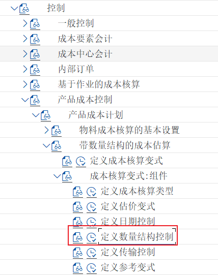
画面 894image907.png · 428×541 
画面 895image908.png · 572×479 画面 894image907.png · 428×541 画面 895image908.png · 572×479 -
PC01 の行をダブルクリック
原文
双击 PC01 行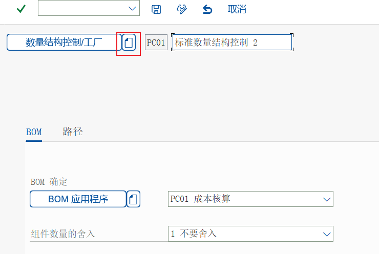
画面 898image909.png · 740×496 教材ノートPC01 の左側の「新規作成」をクリック -
前の画面に続けて操作します（画面 899）
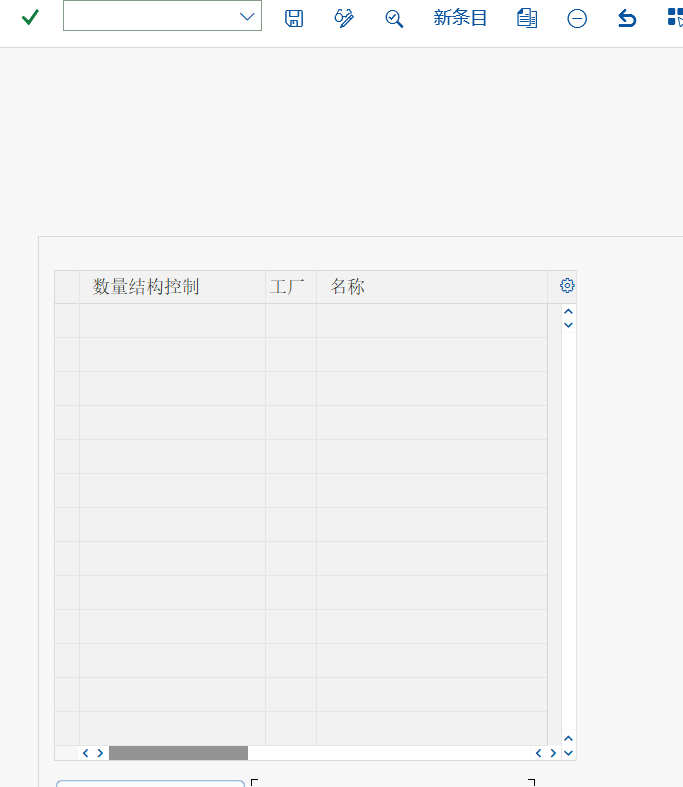
画面 899image910.png · 683×787 
画面 900image911.png · 728×512 教材ノート「新規エントリ」をクリック -
「パス」をクリック
原文
点击路径
画面 901image912.jpeg · 858×537 教材ノート保存
原価計算バリアントを定義
IMG設定（カスタマイズ）3 画面 / 3 ステップ原語（中国語）
控制 → 产品成本控制生产 → 产品成本计划 → 带数量结构的成本估算 → 定义成本核算变式-
管理会計－製品原価管理（生産）－製品原価計画－数量構成付き原価見積－原価計算バリアントの定義
原文
控制－产品成本控制生产－产品成本计划－带数量结构的成本估算－定义成本核算变式
画面 902image913.png · 549×615 -
PPC1 をコピーして変更
原文
复制 PPC1 并修改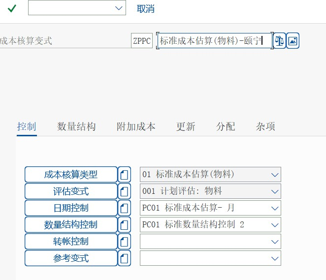
画面 903image914.jpeg · 662×569 -
「更新」をクリック
原文
点击更新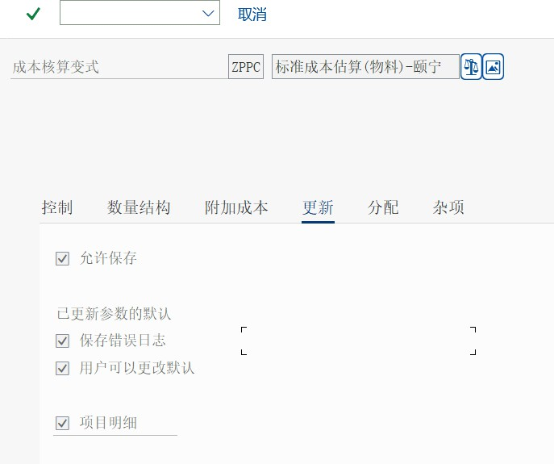
画面 904image915.jpeg · 687×575
製品原価見積を新規登録する
業務処理（トランザクション）CK11N10 画面 / 3 ステップ解説：一般企業の「原価計算日付自」は翌月初ですが、ここでは計算を行うため操作当日に変更します。その他の日付は変更せず、Enter キーを押して進みます
原語（中国語）
解释：一般企业的“成本核算日期从”为下月初，这里未来进行计算改为操作当日，其余日期保持不变，点击回车键进入
会计核算 → 控制 → 产品成本控制 → 产品成本计划 → 物料成本核算 → 带数量结构的成本核算 → CK11N 创建-
解説： 頤寧公司はここで、完成品「鋳鋼ポンプ 170-230」の BOM と工順に基づいてより正確な製品原価を計算し、従来の品目マスタの見積標準原価に置き換えます。
会計－管理会計－製品原価管理－製品原価計画－品目原価計算－数量構成付き原価計算－CK11N 登録原文
解释：颐宁公司现在要根据产成品“铸钢泵 170-230”的 BOM 和工艺路线来技术更精确的产品成本，来取代原来在物料主数据中的估算的标准成本。
会计核算－控制－产品成本控制－产品成本计划－物料成本核算－带数量结构的成本核算－CK11N 创建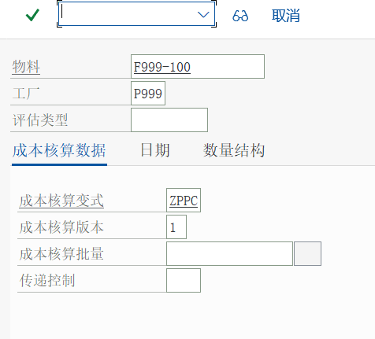
画面 905image916.png · 476×431 
画面 906image919.png · 414×558 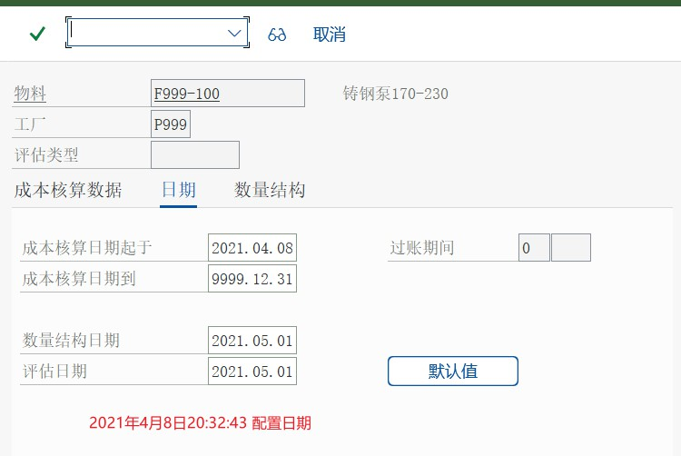
画面 907image920.jpeg · 750×502 画面 906image919.png · 414×558 画面 907image920.jpeg · 750×502 原理の説明注意：算出した原価計算結果が画面と一致するか確認し、その結果がどのように生じたかを分析し、あわせて結果を書き留めてください。 -
解説： これがこの完成品の原価計算です。画面の左側はその製品の構成品目構造、右側の中部はビューごとの原価です。私たちが主に使用するのは「製造原価」です。右側の下部は明細ごとの原価明細分析で、各工程の原価が累加されていることがわかります。関連するメニューから原価構成分析に切り替えることができます。
原価計算ロット 10PC は完成品マスタの原価ビュー 1 から引き継がれています。「保存」をクリックすると表示されます原文
解释：这就是该产成品的成本核算。屏幕左边是该产品的组件结构，右侧中部是不同视图的成本。我们主要使用的是“制造成本”。右侧下部是按项目明细的成本明细分析，我们可以看到按各道工序成本累加。我们可以通过相关菜单切换到成本构成分析。
成本核算批量 10PC 是从产成品主数据的成本视图 1 中传递过来的。点击保存出现
画面 910image921.jpeg · 1461×665 -
前の画面に続けて操作します（画面 911）

画面 911image924.png · 337×348 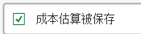
画面 912image925.png · 175×42 画面 911image924.png · 337×348 画面 912image925.png · 175×42
価格のマーク
業務処理（トランザクション）CK2412 画面 / 4 ステップ原語（中国語）
会计核算 → 控制 → 产品成本控制 → 产品成本计划 → 物料成本核算 → CK24-价格更新-
解説： このステップは SAP では「価格のマーク」と呼ばれます。前のステップの完成品の価格見積を、品目マスタの「将来価格」としてマークします
原文
解释：这个步骤 SAP 称为“标记价格”，我们将把前面一个步骤的产成品价格估算“标记”成物料主数据中的“未来价格”画面 915image926.png · 466×578 -
「リリース許可」をクリック
原文
点击允许发布 -
「保存」をクリックすると次の画面が表示される
原文
点击保存后出现如下页面
画面 921image932.png · 850×413 -
解説： 頤寧公司の当月の会計期間が開かれました。「戻る」をクリックし、F8 を押すと下図のようになります。さらに「戻る」を押すと下図のようになります
原文
解释：颐宁公司的账本月被打开，点击退回，点击 F8,如下图，再按返回如下图
画面 922image935.png · 987×316 
画面 923image936.png · 289×33 画面 924image937.png · 658×298 画面 922image935.png · 987×316 画面 923image936.png · 289×33 教材ノートこの時点で価格が更新されています。
完成品の将来計画価格を照会
業務処理（トランザクション）MM036 画面 / 3 ステップ原語（中国語）
后勤 → 物料管理 → 物料主数据 → 物料 → 显示 → MM03-显示当前-
解説： 本ステップでは、鋳鋼ポンプ 170-230 のマスタデータで価格のマークの結果を確認します。新しい価格は将来の計画価格として更新されます。
ロジスティクス－品目管理－品目マスタ－品目－照会－MM03-現在の照会原文
解释：本步骤中，我们将到铸钢泵 170-230 的主数据中去看价格标记的结果新价格将被更新为将来的计划价格。
后勤－物料管理－物料主数据－物料－显示－MM03-显示当前画面 927image938.png · 627×165 -
ここには計画価格 2538.66 が表示されるはずです
原文
此处应该显示计划价格 2538.66
画面 932image943.png · 623×663

価格をリリース
CK242 画面 / 2 ステップ原語（中国語）
会计 → 控制 → 产品成本控制 → 产品成本计划 → 物料成本核算 → CK24-价格更新-
解説： このステップで将来価格をリリースします。これによりシステムが完成品の標準原価を更新します。業務処理
会計－管理会計－製品原価管理－製品原価計画－品目原価計算－CK24-価格更新原文
解释：此步将未来价格发布，这样系统将更新产成品的标准成本。前台
会计－控制－产品成本控制－产品成本计划－物料成本核算－CK24-价格更新画面 933image944.png · 611×587 -
「リリース」をクリックし、F8 をクリック
原文
点击发布点击 F8画面 934image945.png · 679×174 教材ノートこの画面には本来、標準価格 3072 が表示されるはずです（本来は 4440.32 であるはずなので確認してください）原理の説明解説：この完成品に在庫があれば、システムは会計伝票も自動的に生成します。頤寧公司は現在システム上に完成品在庫がないため、標準価格のみを更新します。
完成品（FERT）のリリース済み計画価格を表示します
MM038 画面 / 4 ステップ原語（中国語）
解释：依然到产成品的物料主数据中去查看刚才价格发布的效果。后勤 → 物料管理 → 物料主数据 → 物料 → 显示 → MM03-显示当前-
解説： 引き続き完成品の品目マスタで、先ほどの価格リリースの結果を確認します。ロジスティクス－品目管理－品目マスタ－品目－照会－MM03-現在の照会
原文
解释：依然到产成品的物料主数据中去查看刚才价格发布的效果。后勤－物料管理－物料主数据－物料－显示－MM03-显示当前
画面 935image948.png · 346×545 
画面 936image949.png · 496×130 画面 935image948.png · 346×545 画面 936image949.png · 496×130 -
前の画面に続けて操作します（画面 939）
画面 939image950.png · 543×275 
画面 940image951.png · 620×635 -
標準価格は 4440.32 になるはずです（理由は前のステップと同じ）
原文
应该标准价格会是 4440.32（原因同前步骤）
画面 941image952.png · 618×657 教材ノート「現行」をクリックすると、品目原価見積を確認できます -
前の画面に続けて操作します（画面 942）
画面 942image953.png · 1199×898
実績原価計算の評価バリアントを定義
IMG設定（カスタマイズ）3 画面 / 3 ステップ原語（中国語）
控制 → 产成品成本控制 → 成本对象控制 → 按订单划分的产品成本 → 定义订单交货的货物接收评估-
解説： 前の手順で完成品の標準原価を計算してリリースしました。本ステップでは、製造指図の実績原価見積に評価バリアントを割り当てます。
原文
解释：前面我们计算并发布了产成品的标准成本，在本步骤中我们将为生产订单的实际成本估算分配估价变式。
画面 943image954.png · 392×523 -
前の画面に続けて操作します（画面 944）
画面 944image955.png · 712×307 -
以上が、製造指図の実績原価評価バリアントを配賦済みのプラント一覧です。「新規エントリ」をクリックします
原文
以上是已经分配了生产订单实际成本估价变式的工厂清单，点击新条目画面 945image956.png · 631×129
仕掛品結果分析バージョンを定義
IMG設定（カスタマイズ）4 画面 / 4 ステップ原語（中国語）
控制 → 产品成本控制 → 成本对象控制 → 按订单划分的产品成本 → 期末结算 → 在产品 → 定义结果分析版本-
解説： 本チュートリアルで使用する離散型生産のモードでは、製造指図によって生産を管理します。月末に未完成の製造指図について、システムは製造指図の実績原価残高を仕掛品へ振り替えます。同時に、仕掛品に対して結果分析を行い、現時点までの製造指図の効率を分析することもできます。この考え方は SAP のプロジェクト管理などにおける結果分析と同じです。本ステップでは、簡単な仕掛品の結果分析バージョンを 1 つ定義します。
原文
解释：在本教程使用的离散式生产模式下，我们按生产订单来管理生产，对于月末未完工的生产订单，系统是将生产订单的实际成本余额转作在制品。同时，我们也可以对在制品进行结果分析来分析到目前位置生产订单的效率，这个概念和 SAP 中项目管理等的结果分析是一致的。在本步骤中我们定义一个简单的在制品结果分析版本。
画面 946image957.png · 368×619 -
前の画面に続けて操作します（画面 947）

画面 947image958.png · 475×432 -
「新規エントリ」をクリック
原文
点击新条目画面 948image959.png · 448×446 教材ノートC999 を選択してメンテナンスに入ります。ここは仕掛品の結果分析の詳細画面で、ボタンから詳細メンテナンスを展開できます。簡略化のため、簡単なメンテナンスのみ行います。 -
前の画面に続けて操作します（画面 949）

画面 949image960.png · 569×415
所要量チェックを定義
IMG設定（カスタマイズ）2 画面 / 1 ステップ原語（中国語）
生产 → 商店底价控制 → 工序 → 可用性检查 → 定义检查组-
生産－ショップフロアコントロール－工程－所要量チェック－チェックグループの定義
原文
生产－商店底价控制－工序－可用性检查－定义检查组
画面 950image961.png · 313×529 
画面 951image962.png · 791×268 教材ノートここでは、システムに用意されている 02 を使用します
所要量チェックの範囲を定義
IMG設定（カスタマイズ）3 画面 / 3 ステップ原語（中国語）
生产 → 商店底价控制 → 工序 → 可用性检查 → 定义检查范围-

画面 952image963.png · 350×483 -
解説： このステップでは、品目マスタの「所要量チェックグループ」と製造指図タイプの「チェックルール」に基づいて、所要量チェックの範囲を決定しました。
生産－ショップフロアコントロール－工程－所要量チェック－チェック範囲の定義原文
解释：此步中，我们根据物料主数据中的 “ 可用性检查组” 和生产订单类型中的 “ 检查规则”确定了可用性检查的范围。。
生产－商店底价控制－工序－可用性检查－定义检查范围画面 953image964.png · 493×516 -
本教材に関係する組み合わせは「02 チェックグループ」と「PP チェック規則」です。ダブルクリックします
原文
和本教材相关的组合是“02 检查组”和“PP 检查规则”双击画面 954image965.png · 673×632 原理の説明解説：ここでは、どの在庫や、どのような内向き・外向きの品目移動がチェック範囲に含まれるかなどを定義します。たとえば、品質検査在庫は使用可能な品目に含まれますが、安全在庫は含まれません。
所要量チェックの制御を定義
PP01PP025 画面 / 4 ステップ原語（中国語）
生产 → 商店底价控制 → 工序 → 可用性检查 → 定义检查控制-
解説： 頤寧公司の標準製造指図タイプ PP01 について、指図の登録時や指図発行時に、品目の可用性、PRT（生産資源・ツール）の可用性、能力の可用性、およびチェック規則などを自動チェックするかどうかを IMG 設定で定義します。
原文
解释：在颐宁公司对于标准生产订单类型 PP01，我们是否需要在订单创建或下达的时候自动检查物料的可用性、PRT（生产资源和工具）的可用性、产能的可用性，以及检查规则等后台
画面 955image966.png · 387×486 
画面 956image967.png · 595×240 -
コピーテンプレート 0001 の方式で頤寧プラントをメンテナンスします。プラント 0001 を選択し、タイプ PP01、PP02 の 2 行をコピーします
原文
用复制模板 0001 的方式维护颐宁工厂，选中工厂 0001，类型PP01 、PP02两行复制
画面 957image968.png · 600×524 -
前の画面に続けて操作します（画面 958）

画面 958image969.png · 573×713 -
解説： 頤寧プラントの標準製造指図 PP01 の登録時に 3 種類の所要量チェックを自動実行するようにはしていませんが、手動で所要量チェックを実行することは禁止されていません
原文
解释：我们没有在颐宁工厂的标准生产订单 PP01 创建的时候自动检查三种可用性，但是这并不禁止我们手工出发可用性检查
画面 959image970.png · 613×335
品目マスタの計画戦略グループをメンテナンスします
業務処理（トランザクション）MM024 画面 / 3 ステップ原語（中国語）
后勤 → 生产 → 主数据 → 物料主数据 → 更改 → MM02-立即-
ロジスティクス－生産－マスタデータ－品目マスタ－変更－MM02-即時
原文
后勤－生产－主数据－物料主数据－更改－MM02-立即
画面 960image971.png · 473×174 -

画面 961image972.png · 344×300 -
前の画面に続けて操作します（画面 962）

画面 962image973.png · 543×275 画面 963image974.png · 659×584 教材ノート40 まずこれは在庫生産であり、生産計画の根拠は計画部門がメンテナンスする独立所要量計画ですが、受注伝票は計画に対して依然として影響を持ち、受注伝票は独立所要量計画を消費します。受注伝票が独立所要量計画を使い切ると、計画を超えた伝票所要量は生産計画を増加させます。この戦略は在庫生産（受注生産ではない）の組立生産で多く見られますが、生産量が非常に大きく、同じく在庫生産である日用品とはまた異なります。教材ノート同じ方法を繰り返し、T999-100 をメンテナンスします
品目の独立所要量計画を登録
MD615 画面 / 5 ステップ原語（中国語）
后勤 → 生产 → 生产计划编制 → 需求管理 → 已计划的独立需求 → MD61-创建-
ロジスティクス－生産－生産計画－所要量管理－計画独立所要量－MD61-登録
原文
后勤－生产－生产计划编制－需求管理－已计划的独立需求－MD61-创建
画面 964image975.png · 319×433 -

画面 965image976.png · 503×443 -
解説： 今日から来月末までを入力して月の週計画を作成し、Enter を押すと
原文
解释：填写从今天到下月末，创建月的周计划，回车后
画面 966image977.png · 971×240 -
具体的なデータは各自で入力してかまいません。保存した後、T999-100 の週次独立所要量計画を入力します
原文
具体数据可自行输入，保存后再输入 T999-100 的周独立需求计划
画面 967image978.png · 588×461 -
前の画面に続けて操作します（画面 968）
画面 968image979.png · 1062×228
MRP 一覧を照会
業務処理（トランザクション）MD054 画面 / 3 ステップ原語（中国語）
后勤 → 生产 → 物料需求计划 → 评估 → MD05-MRP 清单-
解説： MRP を実行する前に、まず MRP 一覧を表示してみます。現在表示されているのは、前回 MRP 実行の静的データです。
ロジスティクス－生産－資材所要量計画－評価－MD05-MRP 一覧原文
解释：在运行 MRP 之前，先让我们来显示一下 MRP 清单。现在显示的是上次 MRP 运行的静态数据。
后勤－生产－物料需求计划－评估－MD05-MRP 清单画面 969image980.png · 364×634 
画面 970image981.png · 463×294 -
前の画面に続けて操作します（画面 971）
画面 971image982.png · 1221×288 教材ノートMRP を実行していないため独立所要量計画のデータが反映されておらず、MRP 一覧のデータは静的で、MRP を実行した後に初めて数値が変化します。戻るをクリックして T999-100 の MRP 一覧を表示します。 -
ここには前回 MRP を実行した後の結果が表示されています。画面上部のタイムスタンプに注意してください。
原文
此处显示的上次运行 MRP 后的结果，请注意屏幕上方的时间戳。画面 972image983.jpeg · 1222×399
在庫／所要量一覧を照会
業務処理（トランザクション）MD046 画面 / 3 ステップ原語（中国語）
后勤 → 生产 → 物料需求计划 → 评估 → MD04-库存/需求清单-
ロジスティクス－生産－資材所要量計画－評価－MD04-在庫/所要量一覧
原文
后勤－生产－物料需求计划－评估－MD04-库存/需求清单
画面 973image986.png · 361×626 
画面 974image987.png · 410×293 画面 973image986.png · 361×626 画面 974image987.png · 410×293 -
解説： 比較のため、「在庫／所要量一覧」を表示します。「在庫／所要量一覧」は動的で、現在の特定品目の需要と供給の状況を表示し、新しく登録した独立所要量も表示されています。
原文
解释：作为比较，我们来显示一下“库存/需求清单”。“ 库存/需求清单”是动态的，它显示的是当前某种物料的需求和供给的情况，并且已经将新创建的独立需求显示出来。
画面 977image988.png · 716×521 教材ノートF999-100 に切り替え -
前の画面に続けて操作します（画面 978）
画面 978image989.png · 733×752 原理の説明注意：ここにはタイムスタンプがありません。在庫所要量一覧には独立所要量計画のデータがすでに引き継がれています。在庫所要量一覧は動的に変化します。
資材所要量計画を実行
MD0214 画面 / 9 ステップ000000000xx在庫 xx.xx.2021
原語（中国語）
000000000xx库存 xx.xx.2021
解释：本步骤将由系统自动按照 BOM 来展开物料需求后勤 → 生产 → 物料需求计划 → 计划 → MD02-单项，多层| 項目（日本語） | 画面の中国語 | 教材の設定値 |
|---|---|---|
| すべて変更しました | 都修改到了 | 15.05.2007 |
-
画面 979image990.png · 591×611 画面 980image991.png · 388×454 -
解説： 本ステップでは、システムが BOM に従って品目所要量を自動的に展開します ロジスティクス－生産－資材所要量計画－計画－MD02-単品、多階層
原文
解释：本步骤将由系统自动按照 BOM 来展开物料需求后勤－生产－物料需求计划－计划－MD02-单项，多层画面 981image992.png · 590×695 
画面 982image993.png · 564×331 -
前の画面に続けて操作します（画面 983）

画面 983image994.png · 875×363 -
F999-100 をダブルクリックして進みます
原文
双击 F999-100，进入
画面 984image995.png · 1087×806 原理の説明解説：これは完成品の鋳鋼ポンプ 170-230 の MRP 実行結果です。各独立所要量に対してそれぞれ対応する計画手配が割り当てられていることがわかります。同時に、安全在庫に対する古い計画手配は、開始時間が過去にあるため、実行可能な時間に変更されました。 -
000000000xx/在庫 xx.xx.2021
戻って、品目 R999-100 をダブルクリックします原文
000000000xx/库存 xx.xx.2021
回退，双击物料 R999-100
画面 985image996.png · 852×825 教材ノート確認後、保存前に「結果を表示」のチェックボックスにチェックを入れ、Enter キーで MRP を再実行します -
原材料（ROH）については、多くの非独立所要量 DepReq が生成されていることがわかります。これらの非独立所要量は完成品 F999-100 に対するもので、その日付には生産リードタイムが考慮されています。これらの所要量に対してシステムは新たな計画手配を生成し、同時に、元の購買依頼も日付が変更されました。
18.05.2021 PurRqs 0010000020/00010 14.05.2021原文
我们可以看到，对于原材料来说，生成了许多非独立需求 DepReq，这些非独立需求是针对产成品 F999-100的 ，这些非独立需求的日期考虑了生产提前期。针对这些需求系统生成了新的计划订单，于此同时，原来的采购申请也被修改了日期。
18.05.2021 PurRqs 0010000020/00010 14.05.2021
画面 986image997.png · 726×234 -
画面 987image998.png · 574×737 -
上記の方法を繰り返し、T999-100 に対して MRP を実行します
原文
重复上述方法，对 T999-100 运行 MRP
画面 988image1001.png · 620×596 
画面 989image1002.png · 564×744 画面 988image1001.png · 620×596 画面 989image1002.png · 564×744 -
前の画面に続けて操作します（画面 992）

画面 992image1003.png · 704×238
計画手配を製造指図に変換
業務処理（トランザクション）MD044 画面 / 4 ステップ解説：計画手配の内容が画面の製造指図登録にコピーされます。このときシステムは完成品の工順に従ってスケジュール計画を再設定し、完了日を決定します。
原語（中国語）
解释：计划订单中的内容被复制到了屏幕中的生产订单创建中。这时系统根据产成品的工艺路线重新安排了排程计划，确定了完成日期，
后勤 → 生产 → 物料需求计划 → 评估 → MD04-库存/需求清单-
ロジスティクス－生産－資材所要量計画－評価－MD04-在庫/所要量一覧
原文
后勤－生产－物料需求计划－评估－MD04-库存/需求清单画面 993image1004.png · 403×290 -
解説： MRP の実行には 2 つの主要な結果があります。1 つは完成品に対する計画手配の生成、もう 1 つは原材料に対する購買依頼の生成です。本ステップでは、完成品の計画手配を正式な製造指図に変換します。
この一覧で変換の操作を直接実行できます原文
解释：MRP 运行有两个主要结果：一个是对产成品生成计划订单，另外一个是对原材料产生采购申请。本步骤中我们将产成品的计划订单转换成正式的生产订单。
我们可以在此清单中直接完成转换的操作画面 994image1005.png · 795×248 -
解説： 画面にはこの計画手配の主要情報が表示されます。下部のボタン列で各種の変換操作を実行できます。この計画手配を製造指図に変換します。「製造指図」ボタンをクリックし、「戻る」をクリックします。
原文
解释：屏幕中显示的是该计划订单的主要信息，在下方的一排按钮可以执行各种转换操作，我们将该计划订单转换成生产订单，点击生产订单键，点后退
画面 995image1006.png · 1055×346 -
前の画面に続けて操作します（画面 996）

画面 996image1007.png · 765×676 教材ノート「保存」をクリック教材ノート同じ方法で、その他の計画手配も製造指図に変換します
製造指図一覧を照会
COOIS5 画面 / 2 ステップ原語（中国語）
后勤 → 生产 → 车间现场控制 → 信息系统 → COOIS-订单信息系统-
解説： このステップでは情報システムで頤寧公司の新しい製造指図の一覧を確認します。業務処理
原文
解释：这一步我们到信息系统中去查看颐宁公司新的生产订单的清单。前台
画面 997image1008.png · 289×439 -
前の画面に続けて操作します（画面 998）

画面 998image1011.png · 832×807 画面 999image1012.png · 1180×573 画面 998image1011.png · 832×807 画面 999image1012.png · 1180×573 原理の説明解説：ここでは製造指図の一覧が表示されます。一覧には製造指図の主要な情報が表示されます。この一覧はレポートではなく、この一覧から製造指図の変更、伝票の照会、製造指図の印刷など、さまざまな操作を実行できます。
購買依頼を購買発注に変換
MD0413 画面 / 12 ステップ解説：これは購買発注登録の画面です。画面左側には選択した購買依頼番号が、右側には購買発注登録の標準画面が表示されています
仕入先 10000001 長平鉄工場、購買組織 Y999、会社コード C999、購買グループ PG1 を入力します
「採用」ボタンをクリックし、「保存」をクリック。
同じ方法で、その他の購買依頼もすべて購買発注に変換します。
購買依頼を購買発注に変換します。仕入先と品目の関係は、仕入先と品目の関係を参照します。
原語（中国語）
解释：这是采购订单创建的屏幕，屏幕左侧是我们选中的采购申请号，右侧是采购订单创建的标准屏幕
输入供应商 10000001 长平铁工厂，采购组织 Y999 公司代码 C999，采购组 PG1
点击采用按钮，点击保存。
同样的方法把其他采购申请都转换为采购订单。
采购申请转换为采购订单，供应商和物料间 的关系参照供应商和物料之间的关系。
后勤 → 生产 → 物料需求计划 → 评估 → MD04-库存/需求清单-
解説： このステップでは、MRP によって生成された原材料の購買依頼を購買発注に変換します。業務処理
ロジスティクス－生産－資材所要量計画－評価－MD04-在庫/所要量一覧原文
解释：此步骤将 MRP 生成的对于原材料的采购申请转换为采购订单。前台
后勤－生产－物料需求计划－评估－MD04-库存/需求清单
画面 1002image1013.png · 302×625 -
前の画面に続けて操作します（画面 1003）
画面 1003image1014.png · 418×285 -
引き続き在庫所要量一覧で購買依頼の変換を行います
原文
我们仍然在库存需求清单中完成采购申请的转换画面 1004image1015.png · 806×603 教材ノート具体的な位置は下図のとおり： -
前のステップで変換した製造指図も表示されていることがわかります。「指図構造の作成」ボタンをクリックします
原文
可以看到，上步骤转换的生产订单也显示出来了。点击建立订单结构按钮
画面 1005image1016.png · 897×317 -
前の画面に続けて操作します（画面 1006）

画面 1006image1017.png · 1920×428 -
画面左側に完成品の最初の製造指図 1000000 の構成ツリーが表示され、右側は引き続き完成品の在庫所要量一覧です
原材料（ROH）R999-200 をダブルクリックして進みます原文
屏幕左侧出现了针对产成品的第一个生产订单 1000000的组建树，右侧依然是产成品的库存需求清单
双击原材料 R999-200，进入
画面 1007image1018.png · 1552×752 原理の説明解説：このとき、画面の下側が原材料であるカバーの在庫所要量一覧に変わります。完成品から生じた非独立所要量 DepReq が、完成品の製造指図の登録に伴って指図引当 OrdRes に変換されたことがわかります。次に、購買依頼を購買発注に変換します。 -
購買依頼 PurRqs 0010000021/00010 をダブルクリックして入ります
原文
双击采购申请 PurRqs 0010000021/00010，进入
画面 1008image1019.png · 620×274 -
「購買発注」をクリックして進む
原文
点击采购订单，进入
画面 1009image1020.png · 1504×955 教材ノート同様に MD04 で R999-200、R999-300、R999-400、R999-500 および商品（HAWA）T999-100 の -
R999-500 10000000
T999-100 20000000 PG2
画面 1010image1021.jpeg · 1459×816 -
画面 1011image1022.jpeg · 1428×859 
画面 1012image1023.jpeg · 1441×916 -

画面 1013image1024.jpeg · 1433×876 -
前の画面に続けて操作します（画面 1014）

画面 1014image1025.jpeg · 1441×818
購買発注に対して入庫
業務処理（トランザクション）MIGO2 画面 / 2 ステップ原語（中国語）
后勤 → 物料管理 → 库存管理 → 货物移动 → 收货 → 对采购订单 → 采购订单的 GR（MIGO）-
ロジスティクス－品目管理－在庫管理（MM-IM）－在庫移動－入庫－購買発注に対して－購買発注の GR（MIGO）
原文
后勤－物料管理－库存管理－货物移动－收货－对采购订单－采购订单的 GR（MIGO）
画面 1015image1026.png · 461×553 -
前の画面に続けて操作します（画面 1016）

画面 1016image1027.jpeg · 1369×849 教材ノートまた、商品（HAWA）の保管場所は 0003 です教材ノート「採用」をクリックし、同一仕入先の品目を一度にまとめて入庫します。明細確定にチェックを入れ、保管場所を 0001 にするのを忘れないでください。同じ方法で原材料もすべて入庫します。
購買請求書を入力する
MIROMRBR5 画面 / 5 ステップ原語（中国語）
后勤 → 物料管理 → 后勤发票校验 → 凭证输入 → MIRO-输入发票-
解説： このステップでは、先ほどの購買発注に対して購買請求書を入力し、請求書照合を実行します。業務処理
ロジスティクス－品目管理－ロジスティクス請求書照合（LIV）－伝票入力－MIRO-請求書の入力原文
解释：这一步我们为前面的采购订单输入采购发票，并执行发票校验。前台
后勤－物料管理－后勤发票校验－凭证输入－MIRO-输入发票画面 1017image1028.png · 228×194 -
画面 1018image1029.png · 1143×935 -
前の画面に続けて操作します（画面 1019）

画面 1019image1030.png · 957×893 -
同じ方法を繰り返し、前述のすべての購買発注について請求書をパークし、トランザクションコード MRBR を実行してブロック請求書を解除します
原文
重复同样的办法，对所有前面的采购订单进行发票预制运行事务代码 MRBR 下达冻结发票
画面 1020image1031.jpeg · 1709×311 -
「請求書の承認」F9（緑色の小旗）をクリックします
原文
点击批准发票 F9（绿色小旗帜）
画面 1021image1032.png · 1709×309
製造指図を指図発行
業務処理（トランザクション）CO026 画面 / 5 ステップ原語（中国語）
后勤 → 生产 → 生产控制 → 订单 → CO02-更改-
ロジスティクス－生産－生産管理－指図－CO02-変更
原文
后勤－生产－生产控制－订单－CO02-更改
画面 1022image1033.png · 465×633 -
解説： 内部指図と同様に、製造指図も「ステータス管理」を採用しています。先に登録した製造指図はまだ実行できず、指図発行した後に初めて実行できます。
原文
解释：和内部订单类似生产订单也是采用 “ 状态管理” 的，前面创建的生产订单还不能执行，只有在我们将它下达后，它才能被执行
画面 1023image1034.png · 458×309 -
前の画面に続けて操作します（画面 1024）
画面 1024image1035.png · 636×682 教材ノート入庫ページで「入庫」にチェックを入れる -
画面の上方のステータスをクリックすると、その製造指図の現在のステータスが行に表示されます。隣の i ボタンをクリックするとそのステータスを確認できます。緑の旗をクリックして製造指図を指図発行します。画面の下方にメッセージが表示され、指図発行が実行されました。「保存」をクリックし、同じ方法で他の製造指図も指図発行します。
原文
点击屏幕上方的状态，行显示了这张生产订单目前的状态，可以点击旁边的 i 按钮查看其状态 点击绿色旗帜下达生产订单，屏幕下方出现提示，下达已执行，点击保存，使用同样的方法下达其他生产订单
画面 1025image1036.png · 597×803 
画面 1026image1037.png · 649×690 -
前の画面に続けて操作します（画面 1027）

画面 1027image1038.png · 623×362
製造指図に対して出庫
業務処理（トランザクション）8 画面 / 8 ステップ原語（中国語）
后勤 → 物料管理 → 库存管理 → 货物移动 → MB1A-发货-
解説： 完成品の鋳鋼ポンプ 170-230 の製造指図を指図発行すると、製造指図の実行を開始できます。本ステップでは製造指図に原材料を払い出します。
ロジスティクス－品目管理－在庫管理（MM-IM）－在庫移動－MB1A-出庫原文
解释：产成品铸钢泵 170-230 的生产订单下达后就可以开始生产订单的执行，本步骤我们给生产订单发原材料。
后勤－物料管理－库存管理－货物移动－MB1A-发货
画面 1028image1039.png · 641×447 -
Enter
原文
回车画面 1029image1040.png · 764×706 -
「指図へ」をクリックし、製造指図番号とプラントを入力します
原文
点击到订单，输入生产订单号及工厂
画面 1030image1041.png · 776×356 -
システムが指図内の未出庫の品目を自動的にコピーするので、「保存」をクリックします
原文
系统自动将订单中尚未发货的物料复制过来，点击保存
画面 1031image1042.png · 613×463 -
「出庫」メニュー---「照会」をクリック
原文
点击发货菜单---显示
画面 1032image1043.png · 363×194 -
Enter 後に表示される
原文
回车后看到
画面 1033image1044.png · 810×544 教材ノート「会計伝票」をクリック -
前の画面に続けて操作します（画面 1034）
画面 1034image1045.png · 375×207 -
会計伝票をダブルクリックすると、次のとおり
原文
双击会计凭证，如下
画面 1035image1046.png · 738×557 教材ノート戻って同じ方法を繰り返し、残りの指図発行済み製造指図に対して出庫します
指図確認
業務処理（トランザクション）CO11N10 画面 / 8 ステップ原語（中国語）
后勤 → 生产 → 生产控制 → 确认 → 回车 → 用于操作 → CO11N-计工单-
解説： 本ステップは製造指図の実行プロセスで、完了した各工程を 1 つずつ確認し、作業実績を報告します。これを工票確認または作業時間報告と呼びます。
原文
解释：本步骤是生产订单的执行过程，对于已经完成的各道工序进行逐个的确认和报工，我们称之为工票确认或计工单。
画面 1036image1047.png · 734×769 -
Enter を押す
原文
按回车画面 1037image1048.png · 1104×868 -
「在庫移動」をクリック
原文
点击货物移动
画面 1038image1049.png · 1122×847 -
Enter をクリックすると、次のとおり
原文
点击回车后，如下所示
画面 1039image1050.png · 679×748 画面 1040image1051.png · 698×882 -
ここでは完成品がまだ完成入庫していないことがわかります。「保存」ボタンをクリックし、他の工程の確認を続けます。今回は並行工程の塗装・外装を選択します
「在庫移動」をクリックし、「保存」をクリック原文
这里我们看到产成品尚未完工收获，点击保存按钮，继续对其他工序进行确认，这次我们选择并行的工序，油漆罩壳
点击货物移动，单击保存
画面 1041image1052.png · 734×690 教材ノート上記の方法を繰り返し、工程 20、30、40、50 の作業報告を行います。完成品 F999-100 には全部で 6 つの工程があり、それぞれ 10、20、30、40、50 です。当該工程で計画人工工数を変更した以外は、残りはシステムが自動的に呼び出した計画値を保持します。 -
前の画面に続けて操作します（画面 1042）

画面 1042image1053.png · 661×739 -
画面 1043image1054.png · 653×663 
画面 1044image1055.png · 575×666 -
前の画面に続けて操作します（画面 1045）

画面 1045image1056.png · 696×656
製造指図に対して入庫
業務処理（トランザクション）MIGO2 画面 / 2 ステップ原語（中国語）
后勤 → 物料管理 → 库存管理 → 货物移动 → 收货 → 订单的 GR（MIGO） MIGO_GO-
解説： 製品の鋳鋼ポンプ 170-230 の生産は、各工程の加工を経て正式に完了します。本ステップでは指図の完了入庫を行います
原文
解释：产品铸钢泵 170-230 的生产经过各道工序的加工后正式完工，本步骤进行订单完工收货
画面 1046image1057.png · 398×468 -
前の画面に続けて操作します（画面 1047）

画面 1047image1058.png · 1411×716 教材ノートこの画面は購買入庫と似ていますが、入力する必要があるのは製造指図（1000013）の番号だけです。（製造指図の入庫ページで入庫のチェックを入れるのを忘れないでください）
製造指図の原価を照会
業務処理（トランザクション）CO035 画面 / 1 ステップ原語（中国語）
后勤 → 生产 → 生产控制 → 订单 → CO03-显示-
前の画面に続けて操作します（画面 1048）


{kind=link}
{kind=link}
{kind=link}
{kind=link}
{kind=link}
{kind=link}
{kind=link}
{kind=link}
{kind=link}
{kind=link}
{kind=link}
{kind=link}
{kind=link}
{kind=link}
{kind=link}
{kind=link}
{kind=link}
{kind=link}
{kind=link}
{kind=link}
{kind=link}
{kind=link}
{kind=link}
{kind=link}
{kind=link}
{kind=link}
{kind=link}
{kind=link}
{kind=link}
{kind=link}
{kind=link}
{kind=link}
{kind=link}
{kind=link}
{kind=link}
{kind=link}
{kind=link}
{kind=link}
{kind=link}
{kind=link}
{kind=link}
{kind=link}
{kind=link}
{kind=link}
{kind=link}
{kind=link}
{kind=link}
{kind=link}
{kind=link}
{kind=link}
{kind=link}
{kind=link}
{kind=link}
{kind=link}
{kind=link}
{kind=link}
{kind=link}
{kind=link}
{kind=link}
{kind=link}
{kind=link}
{kind=link}
{kind=link}
{kind=link}
{kind=link}
{kind=link}
{kind=link}
{kind=link}
{kind=link}
{kind=link}
{kind=link}
{kind=link}
{kind=link}
{kind=link}
{kind=link}
{kind=link}
{kind=link}
{kind=link}
{kind=link}
{kind=link}
{kind=link}
{kind=link}
{kind=link}
{kind=link}
{kind=link}
{kind=link}
{kind=link}
{kind=link}
{kind=link}
{kind=link}
{kind=link}
製造指図を技術的完了にする
業務処理（トランザクション）CO022 画面 / 2 ステップ原語（中国語）
后勤 → 生产 → 生产控制 → 订单 → CO02-更改-
解説： 製造指図には 4 つのシステム標準ステータスがあります。登録、指図発行、技術的完了、そして完了です。製造指図と生産に関連する各操作が完了したら、製造指図を技術的完了にする必要があります。しかしこの時点でも、指図決済などの特別な操作を行うことができ、すべての操作が完了した後に初めて指図を完了します。
ロジスティクス－生産－生産管理－指図－CO02-変更原文
解释：生产订单有四种系统标准状：创建、下达、技术性完成和关闭。当生产订单和生产相关的各项操作完成后应该将生产订单作技术性完成，但是这时候我们仍然可以做诸如订单结算等特殊的操作，当所有的操作都完成后，我们才将订单关闭。
后勤－生产－生产控制－订单－CO02-更改
画面 1053image1064.png · 689×754 教材ノートステータスを表示 -
前の画面に続けて操作します（画面 1054）
画面 1054image1065.png · 629×807
{kind=link}
製造指図の差異決済
業務処理（トランザクション）KO882 画面 / 2 ステップ原語（中国語）
会计 → 控制 → 产品成本控制 → 成本对象控制 → 按订单划分的产品成本 → 期末结算 → 单一功能 → KO88 单个处理-
解説： 46 の時点で、この製造指図の実際原価に残高があることが分かりました。これは投入が産出を上回っていることを意味し、製造指図の差異と呼びます。会計の観点では、製造指図の差異は決済を行う必要があります。
会計－管理会計－製品原価管理－原価対象管理－受注別製品原価－期末決算－単一機能－KO88 個別処理原文
解释：46 的时候我们发现该生产订单的实际成本中有余额，这就意味着投入高过产出，我们称之为生产订单的差异，从会计角度来讲，生产订单差异需要做结算。
会计－控制－产品成本控制－成本对象控制－按订单划分的产品成本－期末结算－单一功能－KO88 单个处理画面 1055image1066.png · 697×498 -
前の画面に続けて操作します（画面 1056）
画面 1056image1067.png · 910×265
{kind=link}
{kind=link}
製造指図原価レポートの照会
2 画面 / 1 ステップ原語（中国語）
会计 → 控制 → 产品成本控制 → 成本对象控制 → 按订单划分的产品成本 → 信息系统 → 按订单的产品成本报表 → 详细的报表 → KKBC_ORD-用于订单-
会計－管理会計－製品原価管理－原価対象管理－受注別製品原価－情報システム－受注別製品原価レポート－詳細レポート－KKBC_ORD-受注用
原文
会计－控制－产品成本控制－成本对象控制－按订单划分的产品成本－信息系统－按订单的产品成本报表－详细的报表－KKBC_ORD-用于订单画面 1057image1068.png · 546×401 
画面 1058image1069.jpeg · 1206×464 原理の説明解説：このステップでは情報システムで製造指図の原価レポートを確認します。業務処理
{kind=link}
在庫一覧を照会
MD046 画面 / 5 ステップ原語（中国語）
后勤 → 生产 → 物料需求计划 → 评估 → MD04 库存需求清单| 項目（日本語） | 画面の中国語 | 教材の設定値 |
|---|---|---|
| ダブルクリック | 双击 | Stock |
-
ロジスティクス－生産－資材所要量計画－評価－MD04 在庫所要量一覧
原文
后勤－生产－物料需求计划－评估－MD04 库存需求清单
画面 1059image1070.png · 411×276 
画面 1060image1071.png · 837×717 -
解説： 生産が完了したので、在庫所要量一覧を確認し、完成品の需要と供給のバランス状態を見ます。業務処理
原文
解释：完成了生产，查看一下库存需求清单，来看看产成品的需求和供给的平衡状态。前台画面 1061image1072.png · 682×552 -
前の画面に続けて操作します（画面 1062）
画面 1062image1073.png · 710×377 -
同じ方法で、T999-100 を確認します
原文
同样的方法，查看 T999-100画面 1063image1074.png · 733×666 -
T999-100 はすべて 0003 の輸送倉庫にあります
原文
T999-100 全在 0003 运输库中画面 1064image1075.png · 955×451
{kind=link}
{kind=link}
{kind=link}
{kind=link}
棚卸資産の在庫転送
業務処理（トランザクション）2 画面 / 2 ステップ原語（中国語）
后勤 → 物料管理 → 库存管理 → 货物移动 → MB1B-转移记账-

画面 1065image1076.png · 655×456 -
解説： PP のステップはすべて完了しました。最後に、一部の完成品の在庫を生産倉庫から販売・輸送倉庫へ移します。
ロジスティクス－品目管理－在庫管理（MM-IM）－在庫移動－MB1B-転送転記原文
解释：PP 的步骤都已经完成，最后我们将部分产成品的库存从生产仓库移存到销售运输仓库，。
后勤－物料管理－库存管理－货物移动－MB1B-转移记账
画面 1066image1077.png · 860×325 教材ノート完了後、「保存」をクリック
4. スクリーンショットと設定値について
S4.docx の著者が実システムでキャプチャした中国語インターフェースの画面です（元のファイル名 imageNNN.png は各図の図注に残しているので、Word の原文と 1 枚ずつ照合できます）。当サイトはこれらの画面を一切描き直したり、シミュレーションで再現したりしていません。C999、会社名「頤寧機械有限公司」、プラント F999、品目 R999-100/T999-100/F999-100、得意先 K001/K002 など）はすべて原作者の教材環境のものです。手順どおりに作業するときは、操作の順序と設定ポイントはそのまま流用できますが、具体的な番号や名称はご自身のシステムの値に置き換えてください；ドキュメントと異なるメッセージが出た場合は、まず「トラブルシューティングと注意点」ページで原教材ドキュメントに記録された同種の問題を確認してください。